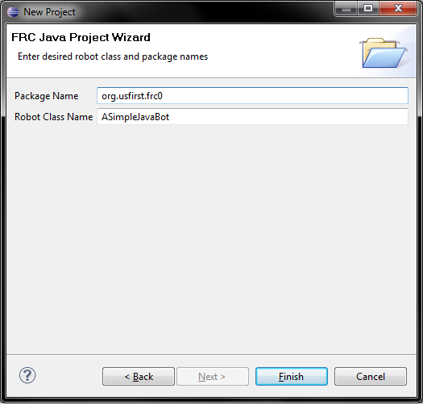

To create a robot project, first select "New Project" from the toolbar or context menu. Then, select either SimpleRobot or IterativeRobot as your template. SimpleRobot is a bare-bones simplified robot setup which includes autonomous and a constantly called operator control function. IterativeRobot has periodic functions for more advanced users.
The project wizard will guide you through the steps of building a standard Java project, after which the robot specific wizard page will appear:
The default package name ends in your team number. After this page is finished the project will be created in your workspace.